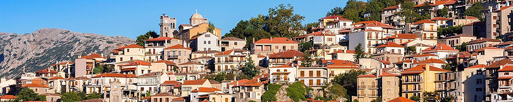
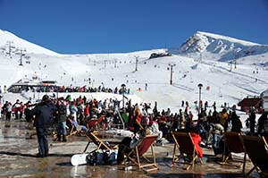
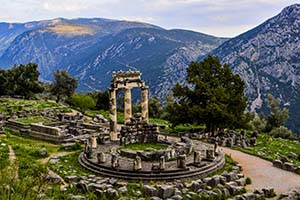
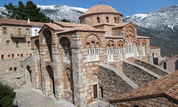
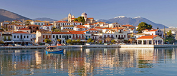

Με αφετηρία την Αράχωβα, μπορεί κανείς να επισκευθεί δίαφορα κοντινά μέρη ενδιαφέροντος:
Στον Παρνασσό βρίσκεται το δημοφιλέστερο χιονοδρομικό κέντρο στην Ελλάδα, συνώνυμο εδώ και δεκαετίες της άθλησης και της διασκέδασης στο χιόνι. Αγαπημένος προορισμός χιλιάδων επισκεπτών, όχι μόνο κατά τους χειμερινούς μήνες, απέχει μόλις μιάμιση ώρα από την πρωτεύουσα, ενώ οι χιονοδρόμοι το προτιμούν, καθώς είναι το μεγαλύτερο και τεχνικά αρτιότερο χιονοδρομικό κέντρο της χώρας, προσφέροντας εμπειρίες που συναγωνίζονται επάξια τα αντίστοιχα κέντρα του εξωτερικού.

Από άποψη υποδομών το Χιονοδρομικό Κέντρο Παρνασσού είναι από τα λίγα χιονοδρομικά κέντρα παγκοσμίως που διαθέτουν αποσυμπλεκόμενους αναβατήρες τύπου Combi και εξυπηρετούν ταυτόχρονα τους επισκέπτες και τους χιονοδρόμους με ταχύτητα και ασφάλεια. Ο Παρνασσός διαθέτει 5 τέτοιες εγκαταστάσεις και είναι το πρώτο κέντρο στην Ελλάδα που εγκατέστησε αποσυμπλεκόμενο εναέριο αναβατήρα. Επίσης, τέσσερις από τις πίστες του είναι πιστοποιημένες από τη διεθνή ομοσπονδία χιονοδρομίας (F.I.S Homologation) για τη διοργάνωση διεθνών αγώνων σκι. Το χιονοδρομικό κέντρο απλώνεται σε δύο περιοχές, την Φτερόλακα και τα Κελάρια, των οποίων οι εγκαταστάσεις έχουν ενοποιηθεί και ενώνονται με εναέριο αναβατήρα.
Με 23 πίστες, 7 χιονοδρομικές διαδρομές και 7 συνδετικά μονοπάτια καλύπτει μία απόσταση 34 χιλιομέτρων, ενώ είναι κατάλληλο για όλα τα επίπεδα δεξιότητας. Οι πιο προχωρημένοι έχουν να επιλέξουν ανάμεσα σε 13 σύγχρονους αναβατήρες, 6 συρόμενους και 7 εναέριους, ενώ υπάρχουν και 4 εύκολοι αναβατήρες babylift για αρχάριους. Οι τολμηροί μπορούν να αναζητήσουν μία από τις πολλές εκτός πίστας, μαύρες διαδρομές, για περισσότερη αδρεναλίνη, ή να επισκεφτούν τα Κελάρια, μία πίστα που απευθύνεται σε έμπειρους χιονοδρόμους και διαθέτει εμπόδια για άλματα και ελιγμούς.
Σε υψόμετρο από 1.640 έως 2.260 μέτρα και με μαγευτική θέα που φτάνει μέχρι τη θάλασσα, το Χιονοδρομικό Κέντρο Παρνασσού επιλέγεται κάθε χρόνο ακόμη κι από επισκέπτες που δεν θέλουν να αθληθούν, αλλά προτιμούν να πιούν μια ζεστή σοκολάτα ή να γευματίσουν στο chalet. Βρίσκεται σε απόσταση αναπνοής από την κοσμική Αράχωβα και γραφικές περιοχές όπως η Αγόριαννη και η Αμφίκλεια και δίπλα στους μαγευτικούς Δελφούς.
| Επικοινωνία | 2234022700 |
| Website | http://www.parnassos-ski.gr |
| Πρόσβαση | Με Ι.Χ. και μέσω του ΚΤΕΛ Άμφισσας. Η πρόσβαση στις εγκαταστάσεις του X.K.Π πραγματοποιείται από ένα οδικό δίκτυο το οποίο αποχιονίζεται συνεχώς. Μέσω των σταθμών της Αμφίκλειας και της Λιλαίας SkiBus: Εξειδικευμένες εταιρείες SkiBus εκτελούν συχνά δρομολόγια Αποστάσεις από τις μεγαλύτερες πόλεις: Από Αθήνα: 180χλμ Από Θεσσαλονίκη: 370χλμ Από Πάτρα: 160χλμ |
Στους πρόποδες του Παρνασσού, στο υποβλητικό φυσικό τοπίο που σχηματίζεται ανάμεσα σε δύο θεόρατους βράχους, τις Φαιδριάδες, βρίσκεται το πανελλήνιο ιερό των Δελφών και το πιο ξακουστό μαντείο της αρχαίας Ελλάδας. Οι Δελφοί ήταν ο ομφαλός της γης, όπου, σύμφωνα με τη μυθολογία, συναντήθηκαν οι δύο αετοί που έστειλε ο Δίας από τα άκρα του σύμπαντος για να βρει το κέντρο του κόσμου, και για πολλούς αιώνες αποτελούσαν το πνευματικό και θρησκευτικό κέντρο και το σύμβολο της ενότητας του αρχαίου ελληνισμού. Η ιστορία των Δελφών χάνεται στην προϊστορία και στους μύθους των αρχαίων Ελλήνων. Σύμφωνα με την παράδοση, εδώ αρχικά υπήρχε ιερό αφιερωμένο στη γυναικεία θεότητα της Γης, και φύλακάς του ήταν ο φοβερός δράκοντας Πύθων. Ο Απόλλωνας σκότωσε τον Πύθωνα και το δικό του ιερό ιδρύθηκε από Κρήτες που έφθασαν στην Κίρρα, το επίνειο των Δελφών, με τη συνοδεία του θεού, μεταμορφωμένου σε δελφίνι. Ο μύθος αυτός σχετικά με την κυριαρχία του Απόλλωνα επιβίωσε σε εορταστικές αναπαραστάσεις που γίνονταν στους Δελφούς, τα Σεπτήρια, τα Δελφίνια, τα Θαργήλεια, τα Θεοφάνεια, και, βέβαια, τα περίφημα Πύθια, που τελούνταν για να θυμίζουν τη νίκη του θεού εναντίον του Πύθωνα και περιελάμβαναν μουσικούς διαγωνισμούς και γυμνικούς αγώνες.

Τα παλαιότερα ευρήματα στην περιοχή των Δελφών χρονολογούνται στη νεολιθική εποχή (4000 π.Χ.) και προέρχονται από το Κωρύκειο Άντρο, σπήλαιο στον Παρνασσό, όπου τελούνταν οι πρώτες λατρείες. Εντός των ορίων του ιερού βρέθηκαν κατάλοιπα μυκηναϊκού οικισμού και νεκροταφείου. Τα ίχνη κατοίκησης είναι ελάχιστα και πολύ αποσπασματικά μέχρι τον 8ο αι. π.Χ., περίοδο κατά την οποία επικράτησε οριστικά η λατρεία του Απόλλωνα και άρχισε η ανάπτυξη του ιερού και του μαντείου. Προς το τέλος του 7ου αι. π.Χ. οικοδομήθηκαν οι πρώτοι λίθινοι ναοί, αφιερωμένοι ο ένας στον Απόλλωνα και ο άλλος στην Αθηνά, που επίσης λατρευόταν επίσημα, με την επωνυμία «Προναία› ή «Προνοία› και είχε δικό της τέμενος. Σύμφωνα με φιλολογικές μαρτυρίες και αρχαιολογικά ευρήματα, στους Δελφούς λατρεύονταν, ακόμη, η Άρτεμις, ο Ποσειδώνας, ο Διόνυσος, ο Ερμής, ο Ζευς Πολιεύς, η Υγεία και η Ειλείθυια.
Με το ιερό συνδέεται ο θεσμός της αμφικτυονίας, της ομοσπονδίας από δώδεκα φυλές της Θεσσαλίας και της Στερεάς, που αποτελούσε αρχικά θρησκευτική ένωση, ενώ αργότερα απέκτησε και πολιτική σημασία. Η δελφική αμφικτυονία είχε τον έλεγχο της περιουσίας και λειτουργίας του ιερού, αφού όριζε τους ιερείς και τους άλλους αξιωματούχους, εκλέγοντάς τους πάντα από κατοίκους των Δελφών. Υπό την προστασία και τη διοίκησή της τον 6ο αι. π.Χ. το ιερό εδραίωσε την αυτονομία του έναντι των διεκδικητών του (Α΄ Ιερός πόλεμος), αύξησε την πανελλήνια θρησκευτική και πολιτική επιρροή του, μεγάλωσε σε έκταση και αναδιοργάνωσε τα Πύθια, τους δεύτερους σε σημασία πανελλήνιους αγώνες μετά τους Ολυμπιακούς, που τελούνταν κάθε τέσσερα χρόνια.
Η περίοδος από τον 6ο έως τον 4ο αι. π.Χ. συμπίπτει με τη μεγάλη ακμή του δελφικού μαντείου. Οι χρησμοί του, που θεωρούνταν οι πιο αξιόπιστοι, εκφράζονταν από την Πυθία, ιέρεια του μαντείου, και ερμηνεύονταν από τους ιερείς του Απόλλωνα. Πόλεις, ηγεμόνες και απλοί άνθρωποι έσπευδαν να συμβουλευθούν το θεό και εξέφραζαν την ευγνωμοσύνη τους με λαμπρά αναθήματα, που σταδιακά κατέκλυσαν το ιερό. Η φήμη του μαντείου έφθασε στα πέρατα του κόσμου και η έναρξη της λειτουργίας του χανόταν στα βάθη της αρχαιότητας και του μύθου. Πιστεύεται ότι το δελφικό μαντείο διατύπωσε καθοριστικές προβλέψεις σχετικά με τον κατακλυσμό του Δευκαλίωνα, την Αργοναυτική εκστρατεία και τον Τρωικό πόλεμο, ενώ βεβαιωμένος είναι ο σπουδαίος ρόλος της γνωμοδότησής του στην ίδρυση των ελληνικών αποικιών. Ακριβώς, όμως, το γόητρο και η ισχύς των Δελφών προκάλεσαν δύο ακόμη Ιερούς Πολέμους, στα μέσα του 5ου και στα μέσα του 4ου αι. π.Χ. Κατά τον 3ο αι. π.Χ. μία νέα πολιτική και στρατιωτική δύναμη εμφανίζεται στο προσκήνιο, οι Αιτωλοί, που εκφράζουν τη δυναμική τους παρουσία στο ιερό με διάφορα αναθήματα. Κατά την περίοδο της ρωμαϊκής κυριαρχίας (μετά το 168 π.Χ.) οι Δελφοί άλλοτε ευνοήθηκαν και άλλοτε λεηλατήθηκαν από τους αυτοκράτορες, όπως από το Σύλλα το 86 π.Χ.
Η παρακμή του μαντείου επήλθε με το φιλοσοφικό κίνημα του ορθολογισμού τον 3ο αι. π.Χ., ωστόσο, το τυπικό στη λειτουργία του έμεινε αναλλοίωτο έως το 2ο αι. μ.Χ., την εποχή του Αδριανού. Τότε το επισκέφθηκε ο περιηγητής Παυσανίας, ο οποίος κατέγραψε λεπτομερώς πάρα πολλά κατάλοιπα κτιρίων, επιγραφών και γλυπτών.Η διεξοδική περιγραφή του συνέβαλε σημαντικά στην ανασύνθεση του χώρου. Το 394 μ.Χ. δόθηκε οριστικό τέλος στη λειτουργία του μαντείου με διάταγμα του βυζαντινού αυτοκράτορα Θεοδοσίου Α΄. Με την επικράτηση του Χριστιανισμού οι Δελφοί έγιναν έδρα επισκοπής, αλλά εγκαταλείφθηκαν στις αρχές του του 7ου αι. μ.Χ., εποχή επέλασης των Σλάβων. Σταδιακά το αρχαίο ιερό επιχώσθηκε και καλύφθηκε ενώ, πολύ αργότερα, πάνω στα θαμμένα ερείπιά του εγκαταστάθηκε ένα ολόκληρο χωριό, το Καστρί, που στους νεότερους χρόνους δέχθηκε τις επισκέψεις των αρχαιόφιλων περιηγητών.
Η έρευνα στον αρχαιολογικό χώρο των Δελφών άρχισε γύρω στο 1860 από Γερμανούς. Το 1891 οι Γάλλοι πήραν από την ελληνική κυβέρνηση έγκριση για διεξαγωγή συστηματικών ερευνών και τότε άρχισε η λεγόμενη «Μεγάλη Ανασκαφή›, αφού πρώτα απομακρύνθηκε το χωριό Καστρί. Κατά τη διάρκειά της ήλθαν στο φως εντυπωσιακά ευρήματα, ανάμεσα στα οποία και περίπου 3.000 επιγραφές, που αποκαλύπτουν διάφορες πτυχές του αρχαίου δημοσίου βίου. Σήμερα, οι εργασίες στο χώρο των δύο δελφικών ιερών συνεχίζονται με τη συνεργασία της Ελληνικής Αρχαιολογικής Υπηρεσίας και της Γαλλικής Σχολής, με ανασκαφική αλλά και αναστηλωτική δραστηριότητα. Το μοναδικό μνημείο που διέθετε το αρχαίο υλικό για τη σχεδόν πλήρη αναστήλωσή του ήταν ο θησαυρός των Αθηναίων, που αποκαταστάθηκε το 1903-1906 από τους Γάλλους με έξοδα του Δήμου Αθηναίων. Άλλα μνημεία που έχουν αναστηλωθεί είναι ο βωμός των Χίων, ο ναός του Απόλλωνα και η θόλος.
Στη νεότερη εποχή, ο χώρος των Δελφών συνδέθηκε με την προσπάθεια αναβίωσης της δελφικής ιδέας, από τον ποιητή Άγγελο Σικελιανό και τη σύζυγό του Εύα, οι οποίοι παρουσίασαν δύο παραστάσεις αρχαίου δράματος, το 1927 και το 1930, θέλοντας να δημιουργήσουν ένα νέο πνευματικό ομφαλό της γης.
Η Μονή Οσίου Λουκά είναι χτισμένη στους δυτικούς πρόποδες του Ελικώνα κάτω από την ακρόπολη της αρχαίας Στείριδας, στην οποία οφείλει και το προσωνύμιο Όσιος Λουκάς ο Στειριώτης. Η μονή βρίσκεται έξω από το χωριό Στείρι και μόλις λίγα χιλιόμετρα από το Δίστομο.

Πρόκειται για ένα αρχιτεκτονικό κόσμημα βυζαντινής τέχνης του 11ου αι., που από το 1990 περιλαμβάνεται στον κατάλογο μνημείων παγκόσμιας κληρονομιάς της UNESCO.
Οι δύο μεγάλες εκκλησίες, της Παναγίας και του Καθολικού, καθώς και όλα τα κτίσματα του μοναστηριακού συγκροτήματος, προκαλούν θρησκευτικό δέος και θαυμασμό στους προσκυνητές, αλλά αποτελούν και αντικείμενα αρχιτεκτονικής μελέτης από τους ειδικούς.
Σε κάθε γωνιά της μονής ξεδιπλώνονται κομμάτια της ελληνικής ιστορίας, από την Φραγκοκρατία μέχρι και τον Β’ Παγκόσμιο πόλεμο. Οι πληγές που άφησαν στο πέρασμά τους οι κατακτητές αποκαταστάθηκαν σταδιακά και ολοκληρώθηκαν το 1989.
Τα Ιερά λείψανα του Οσίου Λουκά, τα οποία είχαν μεταφερθεί από τους Σταυροφόρους τον 13ο αι. στο Βατικανό, βρέθηκαν τελικά στη Βενετία και στις 13 Δεκεμβρίου του 1986 επέστρεψαν στην λειψανοθήκη του Καθολικού.
Η Μονή απέχει 24 χλμ. από την Αράχωβα.
Τηλ: 22670 22228, 22670 21305
Στις νότιες ακτές της Στερεάς Ελλάδας και ύστερα από μια όμορφη διαδρομή ανάμεσα από τους ορεινούς όγκους της Φωκίδας, ξεπροβάλλει το Γαλαξίδι. Αρχοντικό, γραφικό, ιστορικό σύμβολο της ναυτοσύνης, μας αποκαλύπτεται στον μυχό ενός βραχώδους κολπίσκου με θέα σε βραχονησίδες και φάρους. Τα δύο του φυσικά λιμάνια, η Αγορά και ο Χηρόλακας, - που χωρίζονται μεταξύ τους από τον Κάβο - αποτέλεσαν για πολλά χρόνια ορμητήριο ψυχωμένων ναυτικών, που όργωναν με τα περίφημα γαλαξιδιώτικα σκαριά ολόκληρη τη Μεσόγειο. Τρανταχτή απόδειξη της σπουδαίας ναυτικής ιστορίας του τόπου αποτελούν το Ναυτικό – Ιστορικό Μουσείο καθώς και το Λαογραφικό Μουσείο.

Μέσα από τα στενά καλντερίμια ξεκινάμε μια βόλτα στις συνοικίες του παραδοσιακού οικισμού θαυμάζοντας τα νεοκλασικά καπετανόσπιτα. Χρωματιστές προσόψεις μαρμάρινες αψίδες γύρω από τις πόρτες λουλουδιασμένες βοτσαλωτές αυλές πέτρινα μπαλκόνια κοσμημένα με ακρόπρωρα πλοίων αλλά και κεραμοσκεπές, συνθέτουν ένα γραφικό αρχιτεκτονικό τοπίο. Ανάμεσα στα υπέροχα διατηρημένα κτίρια ξεχωρίζουμε το αρχοντικό Τσαλαγγύρα (σήμερα φιλοξενεί το κτίριο του Δημαρχείου), το αρχοντικό Αγγελή που στεγάζει το Λαογραφικό Μουσείο, το πέτρινο Παρθεναγωγείο και το αρχοντικό Μπουρζέικο. Στο όμορφο πάρκο της πόλης σταματάμε για να θαυμάσουμε δυο αρχαία μνημεία: τον τάφο του βασιλιά Λοκρού και τα ερείπια από το τείχος της αρχαίας Οιάνθης που ήταν χτισμένη εκεί. Περιδιαβαίνοντας τις πέντε παραδοσιακές πλατείες οδηγούμαστε στο ψηλότερο σημείο της πόλης για μια επίσκεψη στον Άγιο Νικόλαο με το αριστουργηματικό ξυλόγλυπτο τέμπλο, τα δυο καμπαναριά και τον επιβλητικό τρούλο. Ο πολιούχος της πόλης μαζί με την εκκλησία της Αγίας Παρασκευής, με το ηλιακό ρολόι στο προαύλιο και τον ζωδιακό κύκλο – ηλιοτρόπιο σκαλισμένο στο δάπεδο του 1911, αποτελούν τα κορυφαία προσκυνήματα του Γαλαξιδίου.
Επόμενη στάση, στη δεξιά πλευρά του λιμανιού, στη δασωμένη Πέρα Πάντα για μια πανοραμική θέα της μικρής πολιτείας. Οι φωτογραφικές μηχανές παίρνουν κυριολεκτικά φωτιά! Επειδή, όμως, το περπάτημα και ο καθαρός αέρας ανοίγουν την όρεξη κατευθυνόμαστε με γοργά βήματα προς την ακτή Οιάνθης, όπου είναι παρατεταγμένα τα καφέ και τα εστιατόρια της πόλης. Δοκιμάζουμε τις τοπικές σπεσιαλιτέ (το Γαλαξίδι φημίζεται για τα φρεσκότατα θαλασσινά και τους πεντανόστιμους ψαρομεζέδες ) και γλυκό ραβανί. Οι ντόπιοι μας προτρέπουν να έρθουμε ξανά την περίοδο του καρναβαλιού για να ζήσουμε το παραδοσιακό διονυσιακό έθιμο του «αλευρωμουτζουρώματος» που γίνεται την Καθαρά Δευτέρα.
Απέχει περίπου 40 χιλιόμετρα από την Αράχωβα